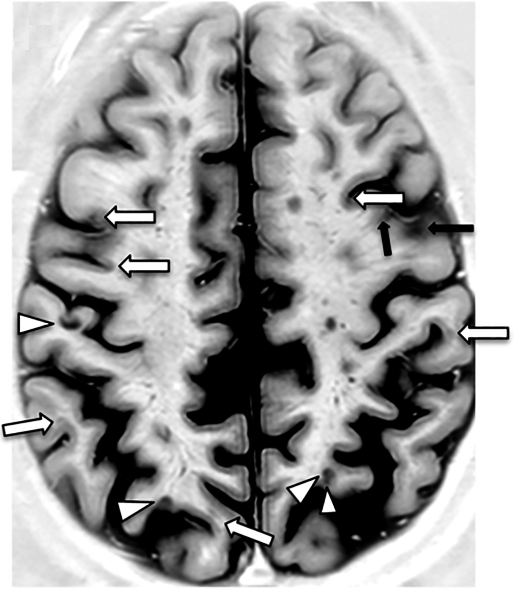

Ficha del catálogo
Esclerosis múltiple
- Sistema
- Nervioso
- Modalidad
- RM
- Región
- Encéfalo y médula espinal
- Dificultad
- Intermedio
La esclerosis múltiple es una enfermedad inflamatoria desmielinizante crónica del sistema nervioso central, mediada por mecanismos inmunitarios. Afecta sobre todo a adultos jóvenes, con predominio en mujeres, y cursa con brotes y remisiones o con curso progresivo. El diagnóstico integra criterios clínicos, hallazgos de imagen y estudio del líquido cefalorraquídeo.
Técnica
Resonancia magnética de encéfalo y médula con FLAIR sagital y axial, T2, difusión y T1 sin y con contraste. Es recomendable un protocolo estandarizado que permita comparar de forma reproducible los estudios de seguimiento.
Qué observar
- Lesiones ovoides periventriculares perpendiculares a los ventrículos
- Lesiones yuxtacorticales o corticales y en cuerpo calloso
- Lesiones infratentoriales, sobre todo en pedúnculos y protuberancia
- Lesiones medulares cortas, de menos de dos cuerpos vertebrales
- Realce nodular o en anillo abierto como marcador de actividad
- Agujeros negros en T1 y atrofia como marcadores de daño acumulado
Hallazgos
Lesiones focales hiperintensas en T2 y FLAIR, ovoides, de distribución periventricular, yuxtacortical, infratentorial y medular. Las lesiones periventriculares dispuestas perpendicularmente al eje ventricular reflejan el trayecto de las vénulas y constituyen un signo característico. Las lesiones activas realzan tras el contraste durante algunas semanas, con un patrón nodular o en anillo abierto orientado hacia la sustancia gris.
Perlas
El diagnóstico exige demostrar diseminación en espacio y en tiempo; la coexistencia de lesiones que realzan y otras que no realzan en un mismo estudio permite establecer la diseminación temporal sin necesidad de esperar un control. El anillo abierto o incompleto es un signo muy útil para diferenciar la placa tumefactiva del tumor o el absceso.
Diagnóstico diferencial
- Enfermedad de pequeño vaso
- Lesiones más redondeadas y confluentes en sustancia blanca profunda, sin afectación del cuerpo calloso ni medular, en pacientes de mayor edad con factores de riesgo vascular.
- Neuromielitis óptica
- Lesiones medulares longitudinales extensas, afectación del área postrema y del nervio óptico, con anticuerpos específicos positivos.
- Encefalomielitis aguda diseminada
- Episodio monofásico posinfeccioso, lesiones grandes y mal definidas de aparición simultánea, más frecuente en niños.
- Vasculitis del sistema nervioso central
- Lesiones isquémicas de distribución territorial, con alteraciones vasculares en el estudio angiográfico.
Simuladores
- Espacios perivasculares dilatados
- Migraña con hiperintensidades inespecíficas de sustancia blanca
- Cambios posradioterapia o por leucoencefalopatía tóxica
Por modalidad
- TC
- Aporta poco, ya que la mayoría de las placas no son visibles (solo sirve para excluir otras causas en urgencias).
- RM
- Es la técnica fundamental para el diagnóstico, la valoración de la actividad inflamatoria y el seguimiento del tratamiento.
Protocolo
FLAIR tridimensional de alta resolución, T2, difusión y T1 sin y con contraste con retraso adecuado, junto con estudio de médula cervical y dorsal en sagital y axial (conviene reproducir la misma angulación y grosor de corte entre estudios).
Clasificación
Los criterios diagnósticos vigentes requieren diseminación en espacio, con lesiones en al menos dos de cuatro localizaciones típicas (periventricular, cortical o yuxtacortical, infratentorial y medular), y diseminación en tiempo, demostrada por lesiones nuevas o por coexistencia de lesiones con y sin realce.
Errores frecuentes
- Diagnosticar la enfermedad por hiperintensidades inespecíficas de sustancia blanca
- Omitir el estudio medular y perder criterios de diseminación en espacio
- Comparar estudios con protocolos distintos y sobrestimar la aparición de lesiones nuevas

esclerosis múltiple desmielinización placas periventriculares anillo abierto diseminación en tiempo médula espinal